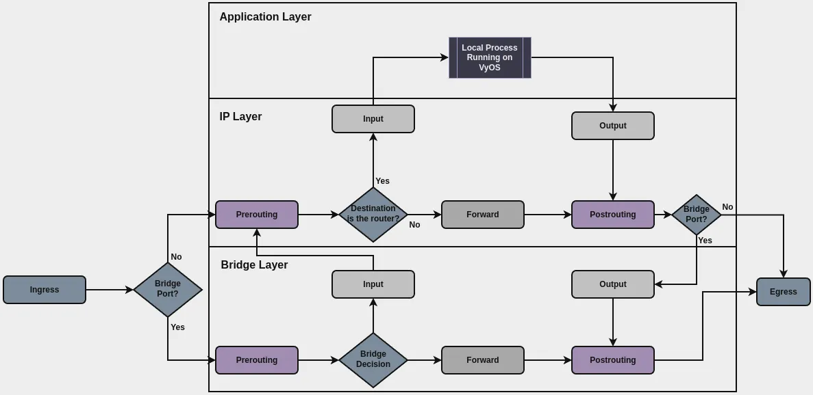

Firewall
The VyOS firewall filters traffic that the router receives, forwards, or generates. It matches packets by their addresses, ports, protocols, connection state, and other properties; groups addresses, networks, interfaces, and ports for reuse in rules; divides interfaces into zones; and offloads forwarded connections to a flowtable.
The firewall operates at two processing layers. The layer at which the firewall begins processing a packet depends on the interface that received it:
IP layer: Processes packets received on interfaces that are not bridge member interfaces.
Bridge layer: Processes packets received on bridge member interfaces.
Packets that the router generates have no receiving interface. The firewall begins processing them at the IP layer. The firewall can continue processing a packet at another layer, for example, when the router sends the packet out through a bridge.
At each layer, the firewall processes packets at specific processing points. The points at which a packet is processed depend on its source and destination. By default, firewall rules apply to matching packets on any interface of their processing layer.
Warning
During boot, the router configures interfaces before it applies the firewall rules. Until then, the firewall does not filter traffic that arrives on interfaces, which poses a security risk.
Packet flow
The following diagram shows how the router processes packets and the paths that traffic can take.

IP layer
The IP layer processes packets received on interfaces that are not bridge member interfaces, packets that the router generates, and packets that the Bridge layer passes on. Depending on its source and destination, the firewall processes a packet at different processing points, as outlined in the following table:
Processing point (hook) |
Processing order |
Packet source or destination |
Configuration applied |
|---|---|---|---|
prerouting |
First processing point at the IP layer for received packets. |
Received packets, regardless of their destination. |
Firewall prerouting raw: Rules that match received packets and apply an
action to them before connection tracking, such as dropping them or
exempting* them from connection tracking. Source validation: Drops received packets whose source address fails the
reverse path check. Policy route: Rules that match packets received on the interfaces you
specify and assign the matching packets to a routing table or
VRF, or modify packet properties. Destination NAT: Rules that match
received packets and translate their destination address and port, or, for
IPv4, redirect them to the router itself. |
input |
After the prerouting processing point. |
Packets whose destination is the router. |
Global state policy: Accepts, drops, or rejects packets according to the
state of their connection, before the input rules. Firewall input: Rules that match received packets and apply an action to
them, such as accepting or dropping them. Zone policy: Rules that match packets according to the zone of the
receiving interface and apply an action to them, such as accepting or
dropping them, after the input rules. |
forward |
After the prerouting processing point. |
Packets that the router routes through to another destination. |
Global state policy: Accepts, drops, or rejects packets according to the
state of their connection, before the forward rules. Firewall forward: Rules that match received packets and apply an action
to them, such as accepting or dropping them. Zone policy: Rules that match packets according to the zones of the
receiving and outgoing interfaces and apply an action to them, such as
accepting or dropping them, after the forward rules. |
output |
First processing point at the IP layer for packets that the router generates. |
Packets that the router generates. |
Firewall output raw: Rules that match generated packets and apply an
action to them before connection tracking, such as dropping them or
exempting* them from connection tracking. Global state policy: Accepts, drops, or rejects packets according to the
state of their connection, before the output filter rules. Firewall output filter: Rules that match generated packets and apply an
action to them, such as accepting or dropping them. Zone policy: Rules that match packets according to the zone of the
outgoing interface and apply an action to them, such as accepting or
dropping them, after the output filter rules. |
- |
After the forward or output processing point. |
Packets that the router sends out, both transit packets and packets that the router generates. |
Source NAT: Rules that match packets and translate their source address
and port. |
* To exempt packets from connection tracking, you can also define rules
under set system conntrack ignore [ipv4 | ipv6] .... These rules apply
to both received and generated packets and are maintained for
compatibility. VyOS recommends rules with the notrack action under
set firewall [ipv4 | ipv6] prerouting raw and set firewall [ipv4 | ipv6] output raw instead, as conntrack ignore rules are expected to
be removed in the future.
At the IP layer, the firewall has no processing point after the forward
or output processing point. Source NAT applies after these points and is
configured separately under set nat source and set nat66 source.
After source NAT, a packet that the router sends out through a bridge is passed to the Bridge layer, which processes it at its output processing point.
After the router offloads a connection to a flowtable, the firewall does not process the subsequent packets of that connection at any processing point of the IP layer.
Bridge layer
The Bridge layer processes packets received on bridge member interfaces and packets that the IP layer passes on to send out through a bridge. Depending on its source and destination, the firewall processes a packet at different processing points, as outlined in the following table:
Processing point (hook) |
Processing order |
Packet source or destination |
Configuration applied |
|---|---|---|---|
prerouting |
First processing point at the Bridge layer for received packets. |
Received packets, regardless of their destination. |
Bridge firewall prerouting: Rules that match received packets and apply
an action to them, such as accepting or dropping them, or exempting them
from connection tracking. |
input |
After the prerouting processing point. |
Packets whose destination is the bridge. |
Global state policy: Accepts, drops, or rejects packets according to the
state of their connection, before the input rules. Bridge firewall input: Rules that match received packets and apply an
action to them, such as accepting or dropping them. |
forward |
After the prerouting processing point. |
Packets that the bridge forwards between its member interfaces. |
Global state policy: Accepts, drops, or rejects packets according to the
state of their connection, before the forward rules. Bridge firewall forward: Rules that match received packets and apply an
action to them, such as accepting or dropping them. |
output |
First processing point at the Bridge layer for packets that the router sends out through a bridge. |
Packets that the router sends out through a bridge, both routed packets and packets that the router generates. |
Global state policy: Accepts, drops, or rejects packets according to the
state of their connection, before the output rules. Bridge firewall output: Rules that match outgoing packets and apply an
action to them, such as accepting or dropping them. |
After the bridge input processing point, accepted IPv4 and IPv6 packets are passed to the IP layer, which processes them starting at IP prerouting.
Zone-based firewall
The zone-based firewall is not a separate service. It is part of the same firewall, and you can use it together with the other firewall rules. It lets you group interfaces into zones and assign rules to control traffic between them. The local zone represents the router itself.
The zone-based firewall processes packets at the following processing points of the IP layer:
Traffic |
Processing point |
|---|---|
From one zone to another zone |
forward |
From a zone to the local zone |
input |
From the local zone to a zone |
output |
At each point, the firewall applies zone rules after the input, forward, or output filter rules.
Firewall configuration
For information on firewall configuration, see the following pages: